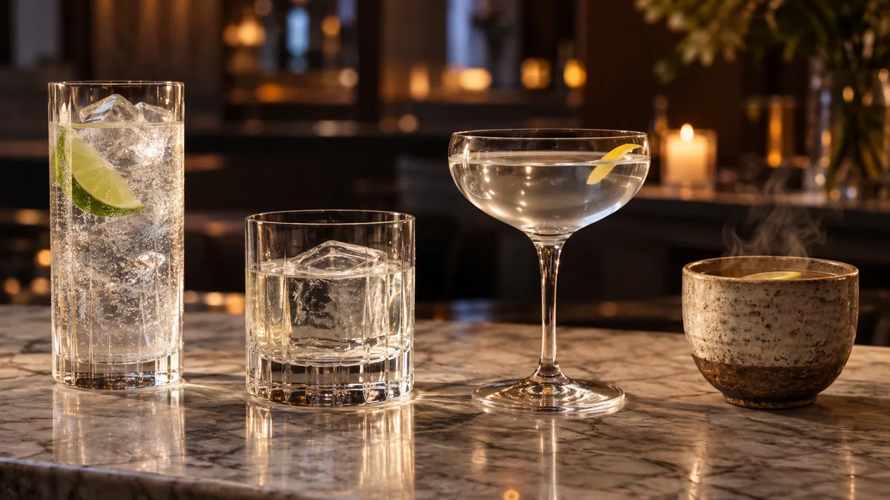

<!DOCTYPE html>
<html lang="ja">
<head>
<meta charset="UTF-8">
<meta name="viewport" content="width=device-width,initial-scale=1">
<meta name="google-site-verification" content="Iv08-YFZHmlaDa3lBSGyhFvcuq0y1E2jyvyC6bSNmR0" />
<title>ジンの割り方・飲み方｜何で割る？クラフトジン公式のおすすめと比率｜Gin-DB</title>
<meta name="description" content="国産クラフトジン253銘柄の公式を調べると、おすすめの飲み方はソーダ割り（77銘柄）・ジントニック（65）・ストレート（43）・ロック（43）。ソーダ・炭酸水の比率は1:4が最多。ジンソーダの作り方、水割り・お湯割り・ジンジャーエール・オレンジジュースの割合も公式の数字で。">
<link rel="icon" type="image/svg+xml" href="../favicon.svg">
<link rel="preconnect" href="https://fonts.googleapis.com">
<link rel="preconnect" href="https://fonts.gstatic.com" crossorigin>
<link rel="stylesheet" href="https://fonts.googleapis.com/css2?family=Inter:wght@400;500;600;700&family=Noto+Sans+JP:wght@400;500;700&family=Noto+Serif+JP:wght@500;700;900&display=swap">
<link rel="stylesheet" href="../assets/style.css?v=20261019b">
<noscript><style>.reveal{opacity:1!important;transform:none!important}</style></noscript>
<script src="../assets/age-gate.js" defer></script>
<script src="../assets/app.js" defer></script>
<link rel="canonical" href="https://gin-db.com/guide/10-ways-to-drink">
<meta property="og:url" content="https://gin-db.com/guide/10-ways-to-drink">
<meta property="og:type" content="article">
<meta property="og:site_name" content="Gin-DB">
<meta property="og:title" content="ジンの割り方・飲み方｜何で割る？クラフトジン公式のおすすめと比率｜Gin-DB">
<meta property="og:description" content="国産クラフトジン253銘柄の公式を調べると、おすすめの飲み方はソーダ割り（77銘柄）・ジントニック（65）・ストレート（43）・ロック（43）。ソーダ・炭酸水の比率は1:4が最多。ジンソーダの作り方、水割り・お湯割り・ジンジャーエール・オレンジジュースの割合も公式の数字で。">
<meta property="og:image" content="https://gin-db.com/assets/images/guide/drink-styles.webp">
<meta property="og:locale" content="ja_JP">
<meta name="twitter:card" content="summary_large_image">
<meta name="twitter:title" content="ジンの割り方・飲み方｜何で割る？クラフトジン公式のおすすめと比率｜Gin-DB">
<meta name="twitter:description" content="国産クラフトジン253銘柄の公式を調べると、おすすめの飲み方はソーダ割り（77銘柄）・ジントニック（65）・ストレート（43）・ロック（43）。ソーダ・炭酸水の比率は1:4が最多。ジンソーダの作り方、水割り・お湯割り・ジンジャーエール・オレンジジュースの割合も公式の数字で。">
<meta name="twitter:image" content="https://gin-db.com/assets/images/guide/drink-styles.webp">
<script async src="https://www.googletagmanager.com/gtag/js?id=G-5MELG0C3X6"></script>
<script>
  window.dataLayer = window.dataLayer || [];
  function gtag(){dataLayer.push(arguments);}
  gtag('js', new Date());
  gtag('config', 'G-5MELG0C3X6');
</script>
<style>
.nw{white-space:nowrap}
.ab-hero{text-align:center;padding:26px 0 6px}
.ab-hero h1{font-family:var(--serif);font-size:clamp(26px,4vw,40px);line-height:1.35;margin-bottom:14px}
.ab-h1sub{display:block;font-size:.5em;color:var(--gold-deep);margin-top:8px;letter-spacing:.04em}
.ab-hero p{font-size:14.5px;color:var(--sub);line-height:1.95;max-width:720px;margin:0 auto}
.ab-answer{background:var(--paper);border:1px solid var(--gold-light);border-radius:14px;padding:20px 22px;margin:26px 0 8px}
.ab-answer h2{font-family:var(--serif);font-size:19px;margin:0 0 12px}
.ab-kpis{display:grid;grid-template-columns:repeat(4,1fr);gap:10px;margin:0 0 12px}
.ab-kpi{background:#fffaf0;border:1px solid var(--line);border-radius:10px;padding:12px 8px;text-align:center}
.ab-kpi b{display:block;font-family:var(--serif);font-size:26px;color:var(--gold-deep);line-height:1.2}
.ab-kpi span{font-size:12px;color:var(--sub)}
.ab-answer p{font-size:14px;line-height:1.9;margin:0}
/* 文節で折る（Chrome系）。Safari は未対応なので数字と単位は .nw でも守る */
.ab-hero,.ab-answer,.ab-sec,.kg-buy,.ab-note{word-break:auto-phrase}
.ab-list{max-width:760px}
/* PCで説明の箱と一覧の幅をそろえる（2026-10-19 値段の記事のレビュー） */
.ab-sec>.ab-rule,.ab-sec>.ab-p,.ab-sec>.ab-note,.ab-sec>.ab-tw,.ab-sec>.ab-hist,.ab-answer>p{max-width:760px}
.ab-tw{margin-bottom:12px}
.ab-table--mix th small{white-space:nowrap}
.ab-sec{margin:44px 0;scroll-margin-top:80px}
.ab-toc{background:var(--paper);border:1px solid var(--line);border-radius:12px;padding:14px 18px;margin:22px 0 0;font-size:14px}
.ab-toc ol{margin:6px 0 0;padding-left:1.4em;columns:2;column-gap:28px}
.ab-toc li{margin:3px 0;break-inside:avoid}
.ab-toc a{color:var(--green-dark)}
@media(max-width:600px){.ab-toc ol{columns:1}}
.ab-h2{font-family:var(--serif);font-size:24px;border-bottom:2px solid var(--gold);padding-bottom:8px;margin:0 0 12px;line-height:1.45}
.ab-rule{font-size:13px;color:var(--sub);line-height:1.85;background:var(--paper);border:1px solid var(--line);border-radius:10px;padding:10px 14px;margin-bottom:14px}
.ab-rule b{color:var(--ink)}
.ab-p{font-size:14.5px;line-height:1.95;margin:0 0 12px}
.ab-hist{list-style:none;padding:0;margin:0}
.ab-bar{display:grid;grid-template-columns:3.6em 1fr 2.4em;gap:10px;align-items:center;padding:3px 0}
.ab-bar__v{font-size:13px;font-weight:700;text-align:right;font-variant-numeric:tabular-nums}
.ab-bar__track{height:16px;background:var(--line-light);border-radius:4px;overflow:hidden}
.ab-bar__fill{display:block;height:100%;background:var(--green);border-radius:4px}
.ab-bar--top .ab-bar__fill{background:linear-gradient(90deg,var(--gold-light),var(--gold-deep))}
.ab-bar__n{font-size:13px;color:var(--sub);font-variant-numeric:tabular-nums}
.ab-bar--top .ab-bar__n{color:var(--gold-deep);font-weight:700}
.ab-bands{display:grid;grid-template-columns:repeat(4,1fr);gap:10px}
.ab-band{background:var(--paper);border:1px solid var(--line);border-radius:12px;padding:14px 12px}
.ab-band b{display:block;font-family:var(--serif);font-size:24px;color:var(--green-dark)}
.ab-band span{display:block;font-size:12.5px;color:var(--sub);line-height:1.6}
.ab-band__t{font-weight:700;color:var(--ink)!important;font-size:13.5px!important}
.ab-list{list-style:none;padding:0;margin:0;border-top:1px solid var(--line)}
.ab-item{display:grid;grid-template-columns:40px 1fr auto;gap:12px;align-items:center;padding:10px 4px;border-bottom:1px solid var(--line)}
.ab-item__b{min-width:0}
.ab-item__n{display:block;font-weight:700;font-size:15px;color:var(--green-dark);text-decoration:none;line-height:1.45}
.ab-item__m{display:block;font-size:12px;color:var(--sub);margin-top:2px;line-height:1.6}
.ab-item__v{font-size:13px;white-space:nowrap}.ab-item__v b{font-family:var(--serif);font-size:20px;color:var(--gold-deep)}
.ab-tw{overflow-x:auto;-webkit-overflow-scrolling:touch}
.ab-table{width:100%;border-collapse:collapse;font-size:13.5px;background:var(--paper)}
.ab-table th,.ab-table td{border:1px solid var(--line);padding:8px 8px;text-align:center;white-space:nowrap}@media(max-width:480px){.ab-table{font-size:12.5px}.ab-table th,.ab-table td{padding:7px 3px}.ab-table th small{font-size:10px}}
.ab-table thead th{background:var(--line-light);font-size:13px}
.ab-table th small{display:block;font-weight:400;font-size:11px;color:var(--sub)}
.ab-table tbody th{text-align:left;background:#fffaf0}
.ab-legal{border-left:3px solid var(--green);padding:4px 0 4px 14px;margin:0 0 16px}
.ab-legal h3{font-size:16px;margin:0 0 6px}
.ab-legal p{font-size:14px;line-height:1.9;margin:0 0 4px}
.ab-legal small{font-size:12px;color:var(--sub)}
.ab-legal small a{color:var(--green)}
.ab-note{font-size:12px;color:var(--sub);line-height:1.8;margin-top:10px}
.ab-note a,.ab-p a{color:var(--green);font-weight:700}
.ab-q{font-size:15.5px;font-weight:700;margin:20px 0 6px}.ab-a{font-size:14px;line-height:1.9}
.ab-links{display:flex;flex-wrap:wrap;gap:8px}
.ab-links a{font-size:13px;font-weight:700;color:var(--green-dark);background:var(--paper);border:1px solid var(--line);border-radius:999px;padding:8px 14px;text-decoration:none}
.kg-buy{background:var(--paper);border:1px solid var(--line);border-radius:14px;padding:22px 20px;margin:48px 0}
.kg-buy__row{padding:14px 0;border-top:1px solid var(--line)}
.ab-buyhead{display:flex;align-items:center;gap:12px;margin-bottom:10px}
.ab-buyhead>div{flex:1;min-width:0}
.kg-buy__row p{font-weight:700;margin:0}.kg-buy__row p span{display:block;font-weight:400;font-size:12px;color:var(--sub);margin-top:2px}
.kg-buy .affiliate-btns{display:grid;grid-template-columns:repeat(3,1fr);gap:6px}
.kg-buy .affiliate-btn{min-width:0;padding:9px 4px;font-size:12px;justify-content:center;width:auto}
@media(max-width:700px){.ab-kpis,.ab-bands{grid-template-columns:1fr 1fr}.ab-h2{font-size:20px}.ab-kpi b{font-size:22px}}

.mx-tbl th small,.mx-tbl td small{display:block;font-weight:400;font-size:11px;color:var(--sub)}
.mx-tbl td.l,.mx-tbl th.l{text-align:left;white-space:normal}
.mx-list{list-style:none;padding:0;margin:0 0 12px;border-top:1px solid var(--line)}
.mx-list li{padding:9px 2px;border-bottom:1px solid var(--line);font-size:14px;line-height:1.7}
.mx-list li a{color:var(--green-dark)}
.mx-list li small{display:block;font-size:12px;color:var(--sub)}
.mx-list b.nw{color:var(--gold-deep)}
.mx-h3{font-size:16px;font-weight:700;color:var(--green-dark);margin:20px 0 8px;line-height:1.5}
.mx-steps{margin:0 0 12px;padding-left:1.5em;font-size:14.5px;line-height:1.8}
.mx-steps li{margin:2px 0}
.mx-grp{font-size:13px;font-weight:700;color:var(--sub);margin:14px 0 4px}
.mx-tbl td.l b{display:block;color:var(--ink,#222)}
.mx-rank{font-size:13px;color:var(--sub);margin:8px 0 6px;line-height:1.7}
.mx-more{margin:6px 0 14px;border:1px solid var(--line);border-radius:10px;padding:0 12px;background:var(--paper)}
.mx-more summary{cursor:pointer;font-weight:700;font-size:14px;color:var(--green-dark);padding:12px 0}
.mx-more[open] summary{border-bottom:1px solid var(--line)}
.mx-more .mx-list{border-top:0}
.mx-toc summary{cursor:pointer;padding:6px 0}
.mx-toc li{padding:4px 0}
.mx-list small a{display:inline-block;padding:4px 0}
.mx-img{margin:18px 0 6px}.mx-img img{width:100%;height:auto;border-radius:12px;display:block}
.mx-img figcaption{font-size:11px;color:var(--sub);text-align:right;margin-top:4px}
</style>
<script type="application/ld+json">{"@context": "https://schema.org", "@type": "BreadcrumbList", "itemListElement": [{"@type": "ListItem", "position": 1, "name": "トップ", "item": "https://gin-db.com/"}, {"@type": "ListItem", "position": 2, "name": "記事", "item": "https://gin-db.com/guide/"}, {"@type": "ListItem", "position": 3, "name": "ジンの割り方・飲み方", "item": "https://gin-db.com/guide/10-ways-to-drink"}]}</script>
<!-- FAQ_SCHEMA:start --><script type="application/ld+json">{"@context": "https://schema.org/", "@type": "FAQPage", "url": "https://gin-db.com/guide/10-ways-to-drink", "mainEntity": [{"@type": "Question", "name": "初心者は何で割るのがおすすめ？", "acceptedAnswer": {"@type": "Answer", "text": "国産ジンの公式でいちばん多く勧められているのはソーダ割り（77銘柄）で、次がジントニック（65銘柄）です。ソーダ割りの比率は1:4がいちばん多く、ジン30mlならソーダ120mlです。"}}, {"@type": "Question", "name": "ジンソーダの割合は？", "acceptedAnswer": {"@type": "Answer", "text": "公式に比率が書かれている25銘柄では1:2から1:6までで、いちばん多いのは1:4（10銘柄）です。サントリーの翠は「翠1：ソーダ4」としています。"}}, {"@type": "Question", "name": "ジンソーダの作り方は？", "acceptedAnswer": {"@type": "Answer", "text": "サントリーのROKU〈六〉の公式は、氷をグラスいっぱいに入れ、ROKU 30mlを注ぎ、グラスのふちからゆっくりとソーダ120mlを注いで、マドラーでゆっくりとひと回しする作り方です。翠の公式も「氷にあてないように」注いで「軽く1回混ぜて」完成としています。"}}, {"@type": "Question", "name": "ジンのソーダ割りは何と呼ぶ？", "acceptedAnswer": {"@type": "Answer", "text": "サントリーのROKU〈六〉と翠の公式は「ジンソーダ」と呼んでいます。ライムを加えてソーダで割るとジンリッキーで、SAKURAO GINの公式レシピはジン45ml・ライム1/4個・ソーダ適量です。"}}, {"@type": "Question", "name": "レモンやライムは入れる？", "acceptedAnswer": {"@type": "Answer", "text": "公式の書き方は銘柄ごとに違います。LASTの公式はソーダ割りに「お好みでレモンを」、NOZAWA GINの公式は「レモンを添える」、熊野の公式はジントニックに「お好みでライムを搾り落として」と書いています。ROKUの公式は、ソーダ割りの季節のトッピングとして「すだち（1/4）」「柚子（1/8）」などを勧めています。"}}, {"@type": "Question", "name": "ロックやストレートはきつい？", "acceptedAnswer": {"@type": "Answer", "text": "割らないので、ジンの度数そのままです。国産ジンは40〜47%の銘柄が多く、ソーダ1:4で割ると約8.0〜9.4%になります。公式でロックを勧めている銘柄は43、ストレートは43あります。"}}, {"@type": "Question", "name": "ジンは冷凍庫で冷やしていい？", "acceptedAnswer": {"@type": "Answer", "text": "KITAYA CRAFT GINの公式は「冷凍庫でキンキンに冷やしてストレートやロック」を勧めていて、銀鼠と熊野の公式も冷凍庫で冷やして飲む「パーシャルショット」を勧めています。熊野の公式は、冷凍OKなグラスに移し替えてラップで軽く蓋をして冷やすよう書き、「商品を瓶のまま冷凍庫に入れないでください」と注意しています。瓶ごと冷やしてよいかは、銘柄ごとの公式の説明で確かめてください。"}}, {"@type": "Question", "name": "ジンの水割りの割合は？", "acceptedAnswer": {"@type": "Answer", "text": "西酒造のORIGIN FLOWER GINの公式は、常温の水で「1：3」と書いています。季のTEA 京都ドライジンの公式は「ジン40ml・よく冷やしたミネラルウォーター60ml」です。公式で水割りを勧めているのは7銘柄と少なく、ソーダ割り（77銘柄）とは大きな差があります。"}}, {"@type": "Question", "name": "ジンとオレンジジュースの割合は？", "acceptedAnswer": {"@type": "Answer", "text": "ジンをオレンジジュースで割るカクテルがオレンジ・ブロッサムです。SAKURAO GINの公式レシピは、ジン20ml・オレンジジュース40ml（1:2）を氷とシェークしてグラスに注ぐ作り方で、度数は公式の表記で15%です。"}}, {"@type": "Question", "name": "ジンジャーエールで割る割合は？", "acceptedAnswer": {"@type": "Answer", "text": "明利酒類のノエルのポーションの公式は、トニックウォーター・ジンジャーエール・炭酸の割合を「1：3」としています。ライムを加えるとジンバックで、SAKURAO GINの公式レシピはジン45ml・ライムジュース5〜10ml・ジンジャーエール適量です。"}}, {"@type": "Question", "name": "トニックやソーダ以外で割るなら？", "acceptedAnswer": {"@type": "Answer", "text": "公式が勧めている例には、ジャスミンティー・紅茶・烏龍茶・レモングラスティーなどのお茶割り、りんごジュース割り、牛乳割り、甘酒割りなどがあります。コーラ割りを勧める公式は、今回の調査では見つかりませんでした。"}}]}</script><!-- FAQ_SCHEMA:end -->
<!-- ARTICLE_LD:start --><script type="application/ld+json">{"@context": "https://schema.org", "@type": "Article", "headline": "ジンの割り方・飲み方", "description": "国産クラフトジン253銘柄の公式を調べると、おすすめの飲み方はソーダ割り（77銘柄）・ジントニック（65）・ストレート（43）・ロック（43）。ソーダ・炭酸水の比率は1:4が最多。ジンソーダの作り方、水割り・お湯割り・ジンジャーエール・オレンジジュースの割合も公式の数字で。", "url": "https://gin-db.com/guide/10-ways-to-drink", "mainEntityOfPage": "https://gin-db.com/guide/10-ways-to-drink", "inLanguage": "ja", "image": "https://gin-db.com/assets/images/guide/drink-styles.webp", "datePublished": "2026-05-09", "dateModified": "2026-10-30", "author": {"@type": "Organization", "name": "Gin-DB", "url": "https://gin-db.com/"}, "publisher": {"@type": "Organization", "name": "Gin-DB", "logo": {"@type": "ImageObject", "url": "https://gin-db.com/favicon.svg"}}}</script><!-- ARTICLE_LD:end -->
<script async src="https://pagead2.googlesyndication.com/pagead/js/adsbygoogle.js?client=ca-pub-4574282182317615" crossorigin="anonymous"></script>
</head>
<body>
<a class="skip-link" href="#main">本文へスキップ</a>
<header class="site-header">
  <div class="site-header__inner">
    <div class="logo"><a href="../index.html">Gin-DB</a> <small>日本のクラフトジン</small></div>
    <button class="nav-toggle" aria-label="メニュー" aria-expanded="false" aria-controls="site-nav"><svg class="icon-svg" width="20" height="20" aria-hidden="true"><use href="/assets/icons.svg#i-menu"/></svg></button>
    <nav class="site-nav" id="site-nav" aria-label="メインメニュー">
      <a href="../index.html">トップ</a>
      <a href="../find.html">一覧・検索</a>
      <a href="../botanical.html">ボタニカル逆引き</a>
      <a href="../awards.html">受賞ジン</a>
      <a href="../furusato.html">ふるさと納税</a>
      <a href="../guide/index.html">記事</a>
      <a href="../contact.html">お問い合わせ</a>
    </nav>
  </div>
</header>
<main id="main">
<article class="container">
  <nav class="breadcrumb" aria-label="パンくず"><ol>
    <li><a href="../index.html">トップ</a></li><li><a href="index.html">記事</a></li><li>ジンの割り方・飲み方</li></ol></nav>

  <div class="ab-hero">
    <h1>ジンの割り方・飲み方 <small class="ab-h1sub">何で割る？国産クラフトジン公式のおすすめと作り方</small></h1>
<p class="pub-dates" style="font-size:12px;color:var(--sub);margin:6px 0 10px;"><span style="white-space:nowrap;">公開 2026年5月9日</span>　<span style="white-space:nowrap;">最終更新 2026年10月30日</span>　<a href="../about.html" style="color:var(--green);">運営者情報</a></p>
    <p>国産クラフトジン299銘柄の公式サイトを調べ、確かめられた253銘柄から、蒸溜所が勧めている飲み方・割合・作り方をまとめました。</p>
  </div>

  <section class="ab-answer" id="answer">
    <h2>公式がいちばん勧めるのはソーダ割り、比率は<span class="nw">1:4</span>が最多</h2>
    <div class="ab-kpis">
      <div class="ab-kpi"><b>77</b><span>ソーダ割り推し</span></div>
      <div class="ab-kpi"><b>65</b><span>2位 ジントニック</span></div>
      <div class="ab-kpi"><b>1:4</b><span>ソーダ比率で最多</span></div>
      <div class="ab-kpi"><b>約8.0%</b><span>40%を1:4で割ると</span></div>
    </div>
    <p class="mx-rank">公式のおすすめ：<span class="nw">ソーダ割り77</span>・<span class="nw">ジントニック65</span>・<span class="nw">ストレート43</span>・<span class="nw">ロック43</span>・<span class="nw">お湯割り14</span>・<span class="nw">水割り7</span>。253銘柄中の数です。</p>
    <p>国産ジン（ジャパニーズジン）の公式サイトを253銘柄確かめると、いちばん多く勧められている飲み方は<span class="nw">ソーダ割り</span>でした。比率が書かれている25銘柄では<span class="nw">1:4</span>がいちばん多く、ジン30mlにソーダ120mlです。迷ったら、まず下のジンソーダの作り方から試してください。</p>
  </section>

  <details class="ab-toc mx-toc"><summary><b>目次</b></summary><ol><li><a href="#soda">ジンソーダの作り方と割合</a></li><li><a href="#quick">何で割る？早見表</a></li><li><a href="#tonic">トニックで割るなら</a></li><li><a href="#ginger">ジンジャーエールで割るなら</a></li><li><a href="#buy">公式の割り方どおりに試せるジン</a></li><li><a href="#rock">ロック・ストレート</a></li><li><a href="#hot">お湯割り・水割りの割合</a></li><li><a href="#other">お茶・ジュース・牛乳で割る</a></li><li><a href="#official">公式がおすすめする飲み方の集計</a></li><li><a href="#cocktail">定番カクテルの公式レシピ</a></li><li><a href="#faq">よくある質問</a></li></ol></details>

  <section class="ab-sec" id="soda">
    <h2 class="ab-h2">ジンソーダ（炭酸水割り）の作り方と割合</h2>
    <h3 class="mx-h3">まずはこれ：<span class="nw">ROKU〈六〉</span>公式のジンソーダ</h3>
    <p class="ab-p">サントリーの<a href="../gin/suntory-osaka-1.html"><span class="nw">ROKU〈六〉</span></a>の公式サイトの手順です。分量は<span class="nw">ジン 30ml</span>・<span class="nw">ソーダ 120ml</span>で、<span class="nw">1:4</span>です。</p>
    <ol class="mx-steps"><li>氷をグラスいっぱいに入れます。</li><li>ROKU〈六〉を注ぎます。</li><li>グラスのふちからゆっくりとソーダを注ぎます。</li><li>マドラーでゆっくりとひと回しすれば完成です。</li></ol>
    <p class="ab-p">同じサントリーの翠は「ジョッキに氷をたっぷりと入れる」「氷にあてないように<span class="nw">翠1：ソーダ4</span>の割合で注ぐ」「軽く1回混ぜて完成!」の3つの手順です。どちらも氷をたっぷり入れ、ソーダは静かに注ぎ、混ぜるのは1回だけです。</p>
    <p class="ab-p">ROKUの公式は、ソーダ割りに「塩抜きした桜の花」「すだち（1/4）」「針生姜（6本）」「柚子（1/8）」など季節のトッピングも勧めています。ライムを加えてソーダで割るとジンリッキーで、SAKURAO GINの公式レシピは<span class="nw">ジン 45ml</span>・<span class="nw">ライム 1/4個</span>・<span class="nw">ソーダ 適量</span>です。</p>
    <p class="ab-note">出典：<a href="https://www.suntory.co.jp/wnb/rokugin/enjoy.html" rel="noopener" target="_blank">ROKU〈六〉公式「愉しみ方」</a>・<a href="https://www.suntory.co.jp/wnb/suigin/" rel="noopener" target="_blank">翠 公式サイト</a>・<a href="https://www.sakuraobd.co.jp/original/" rel="noopener" target="_blank">SAKURAO GIN 公式レシピ</a>。確認日：<span class="nw">2026年10月29日</span></p>
    <h3 class="mx-h3">公式のソーダ割りの割合：25銘柄</h3>
    <p class="ab-p">迷ったら、いちばん多い<span class="nw">1:4</span>です。公式の比率は<span class="nw">1:2</span>から<span class="nw">1:6</span>まであり、ソーダが少ないほど度数が上がります。40%のジンなら、1:3で<span class="nw">約10.0%</span>、1:4で<span class="nw">約8.0%</span>、1:5で<span class="nw">約6.7%</span>です。</p>
    <details class="mx-more"><summary>25銘柄の公式の割合を見る</summary>
    <ul class="mx-list"><li><b class="nw"><span class="nw">1:2</span></b>　<a href="../gin/marumori-1.html"><span class="nw">竹霖之風</span></a><small>丸森蒸留所・<span class="nw"><a href="https://marumori-gin.com/dagz1hs0cco" rel="noopener" target="_blank">公式の説明</a></span></small></li><li><b class="nw"><span class="nw">1:2〜4</span></b>　<a href="../gin/hamada-juju-1.html">ジャパニーズクラフトジン 樹々</a><small>濵田酒造・<span class="nw"><a href="https://www.hamadasyuzou.co.jp/denzouin/products/juju.html" rel="noopener" target="_blank">公式の説明</a></span></small></li><li><b class="nw"><span class="nw">約1:2.3</span></b>　<a href="../gin/kiyosu-sakura-1.html"><span class="nw">愛知クラフトジン キヨス</span></a><small>清洲桜醸造・<span class="nw"><a href="https://onikoroshi.co.jp/aichi-craft/gin/" rel="noopener" target="_blank">公式の説明</a></span></small></li><li><b class="nw"><span class="nw">約1:2.7</span></b>　<a href="../gin/tankyu-distillery-1.html"><span class="nw">雪の窓 ドライジン</span></a><small>丹丘蒸留所・<span class="nw"><a href="https://shop.tankyudistillery.jp/products/yuki-no-mado-gin" rel="noopener" target="_blank">公式の説明</a></span></small></li><li><b class="nw"><span class="nw">1:3</span></b>　<a href="../gin/asahi-shuzo-kubota-1.html"><span class="nw">KUBOTA GIN</span></a><small>朝日酒造・<span class="nw"><a href="https://www.asahi-shuzo.co.jp/gin/kubotagin/recommend/" rel="noopener" target="_blank">公式の説明</a></span></small></li><li><b class="nw"><span class="nw">1:3</span></b>　<a href="../gin/hachioji-distillery-3.html">TOKYO HACHIO GIN ORIENTAL</a><small>東京八王子蒸溜所・<span class="nw"><a href="https://hachio-gin.jp/oriental/" rel="noopener" target="_blank">公式の説明</a></span></small></li><li><b class="nw"><span class="nw">1:3</span></b>　<a href="../gin/hakutsuru-1.html">KOBE HERBAL GIN 白風 #01</a>、<a href="../gin/hakutsuru-2.html">KOBE HERBAL GIN 白風 #02</a><small>白鶴酒造 神戸御影蒸溜所・<span class="nw"><a href="https://www.e-hakutsuru.com/products/19290" rel="noopener" target="_blank">公式の説明1</a></span>・<span class="nw"><a href="https://www.e-hakutsuru.com/products/19292" rel="noopener" target="_blank">公式の説明2</a></span></small></li><li><b class="nw"><span class="nw">1:3</span></b>　<a href="../gin/meiri-shurui-1.html"><span class="nw">ノエルのポーション</span></a><small>明利酒類・<span class="nw"><a href="https://meirishurui.com/alcohol/2181/" rel="noopener" target="_blank">公式の説明</a></span></small></li><li><b class="nw"><span class="nw">1:3</span></b>　<a href="../gin/nishi-shuzo-2.html">ORIGIN FLOWER GIN</a><small>西酒造・<span class="nw"><a href="https://kurachoku-club.shop/products/origin-flower-gin" rel="noopener" target="_blank">公式の説明</a></span></small></li><li><b class="nw"><span class="nw">1:3〜4</span></b>　<a href="../gin/miyagi-craft-gin-1.html"><span class="nw">クラフトジン 欅</span></a><small>Miyagi Craft Gin・<span class="nw"><a href="https://miyagi-craft-gin.com/product-keyaki/" rel="noopener" target="_blank">公式の説明</a></span></small></li><li><b class="nw"><span class="nw">1:3〜4</span></b>　<a href="../gin/nishi-shuzo-3.html">ORIGIN LEMON GIN</a><small>西酒造・<span class="nw"><a href="https://kurachoku-club.shop/products/lemongin" rel="noopener" target="_blank">公式の説明</a></span></small></li><li><b class="nw"><span class="nw">約1:3.3</span></b>　<a href="../gin/nozawa-onsen-1.html"><span class="nw">NOZAWA GIN</span></a><small>野沢温泉蒸留所・<span class="nw"><a href="https://nozawaonsendistillery.jp/products/200ml-tasting-bundle" rel="noopener" target="_blank">公式の説明</a></span></small></li><li><b class="nw"><span class="nw">約1:3.3</span></b>　<a href="../gin/nozawa-onsen-2.html">CLASSIC DRY GIN</a><small>野沢温泉蒸留所・<span class="nw"><a href="https://nozawaonsendistillery.jp/products/classic-dry-gin" rel="noopener" target="_blank">公式の説明</a></span></small></li><li><b class="nw"><span class="nw">1:4</span></b>　<a href="../gin/ethical-spirits-1.html"><span class="nw">LAST ELEGANT</span></a>、<a href="../gin/ethical-spirits-3.html"><span class="nw">LAST ELYSIUM</span></a><small>東京リバーサイド蒸溜所・<span class="nw"><a href="https://shop.ethicalspirits.jp/products/last-elegant" rel="noopener" target="_blank">公式の説明1</a></span>・<span class="nw"><a href="https://shop.ethicalspirits.jp/products/last-elysium" rel="noopener" target="_blank">公式の説明2</a></span></small></li><li><b class="nw"><span class="nw">1:4</span></b>　<a href="../gin/kizakura-tamba-1.html"><span class="nw">黄桜クラフトジン 花物語</span></a><small>黄桜 丹波蒸溜所・<span class="nw"><a href="https://www.kizakura-shop.com/view/item/000000000366" rel="noopener" target="_blank">公式の説明</a></span></small></li><li><b class="nw"><span class="nw">1:4</span></b>　<a href="../gin/komasa-gin-2.html">KOMASA GIN ほうじ茶</a><small>小正醸造・<span class="nw"><a href="https://komasagin.com/cocktails/" rel="noopener" target="_blank">公式の説明</a></span></small></li><li><b class="nw"><span class="nw">1:4</span></b>　<a href="../gin/komasa-gin-3.html"><span class="nw">KOMASA GIN 苺</span></a><small>小正醸造・<span class="nw"><a href="https://komasagin.com/cocktails/" rel="noopener" target="_blank">公式の説明</a></span></small></li><li><b class="nw"><span class="nw">1:4</span></b>　<a href="../gin/kyoya-yuzu-3.html">Yuzu Cool クラフトジン</a><small>京屋酒造・<span class="nw"><a href="https://kyo-ya.online/shop/products/24161" rel="noopener" target="_blank">公式の説明</a></span></small></li><li><b class="nw"><span class="nw">1:4</span></b>　<a href="../gin/masahiro-okinawa-2.html">まさひろオキナワジン RECIPE 02</a><small>まさひろ酒造・<span class="nw"><a href="https://shop.masahiro.co.jp/view/item/000000000076" rel="noopener" target="_blank">公式の説明</a></span></small></li><li><b class="nw"><span class="nw">1:4</span></b>　<a href="../gin/nishino-kinryo-1.html"><span class="nw">夕凪GIN</span></a><small>西野金陵・<span class="nw"><a href="https://www.nishino-kinryo.co.jp/store/products/details/195" rel="noopener" target="_blank">公式の説明</a></span></small></li><li><b class="nw"><span class="nw">1:4</span></b>　<a href="../gin/suntory-osaka-1.html"><span class="nw">ROKU〈六〉</span></a><small>サントリー大阪工場・<span class="nw"><a href="https://www.suntory.co.jp/wnb/rokugin/enjoy.html" rel="noopener" target="_blank">公式の説明</a></span></small></li><li><b class="nw"><span class="nw">1:4</span></b>　<a href="../gin/suntory-osaka-3.html"><span class="nw">翠</span></a><small>サントリー大阪工場・<span class="nw"><a href="https://www.suntory.co.jp/wnb/suigin/" rel="noopener" target="_blank">公式の説明</a></span></small></li><li><b class="nw"><span class="nw">1:4〜6</span></b>　<a href="../gin/senjo-1.html">SENJO クラフトジン SAKURA</a><small>仙醸・<span class="nw"><a href="https://www.senjyo.co.jp/prd_post/senjo-gin-sakura/" rel="noopener" target="_blank">公式の説明</a></span></small></li></ul>
    <p class="ab-note">ソーダの少ない順です。説明が共通の銘柄は1行にまとめました。</p>
    </details>
  </section>

  <section class="ab-sec" id="quick">
    <h2 class="ab-h2">ジンは何で割る？割り方の早見表</h2>
    <p class="ab-p">割り方ごとに、公式に書かれている比率の例と、ジン30ml・40%で作ったときの度数とカロリーをまとめました。</p>
    <div class="ab-tw"><table class="ab-table mx-tbl"><thead><tr><th class="l">割り方<small>公式の比率の例</small></th><th>度数</th><th>カロリー<small>炭水化物</small></th></tr></thead><tbody><tr><th class="l">ソーダ割り（ジンソーダ）<small>1:2〜6・いちばん多いのは1:4</small></th><td><span class="nw">約8.0%</span></td><td><span class="nw">67kcal</span><small>0.0g</small></td></tr><tr><th class="l">ジントニック<small>1:2〜5・ROKUなどは1:4</small></th><td><span class="nw">約8.0%</span></td><td><span class="nw">113kcal</span><small>11.3g</small></td></tr><tr><th class="l">ソニック（トニック＋ソーダ）<small>ROKU 1:2:2（ジン：トニック：ソーダ）</small></th><td><span class="nw">約8.0%</span></td><td><span class="nw">90kcal</span><small>5.6g</small></td></tr><tr><th class="l">ジンジャーエール割り<small>ノエルのポーション 1:3</small></th><td><span class="nw">約10.0%</span></td><td><span class="nw">101kcal</span><small>8.4g</small></td></tr><tr><th class="l">オレンジジュース（オレンジ・ブロッサム）<small>SAKURAO GIN 1:2</small></th><td><span class="nw">約13.3%</span></td><td><span class="nw">—</span><small></small></td></tr><tr><th class="l">お湯割り<small>ROKU 1:4（お湯）</small></th><td><span class="nw">約8.0%</span></td><td><span class="nw">67kcal</span><small>0.0g</small></td></tr><tr><th class="l">水割り<small>ORIGIN FLOWER GIN 1:3（常温の水）</small></th><td><span class="nw">約10.0%</span></td><td><span class="nw">67kcal</span><small>0.0g</small></td></tr><tr><th class="l">ロック・ストレート<small>割らない</small></th><td><span class="nw">40%</span></td><td><span class="nw">67kcal</span><small>0.0g</small></td></tr></tbody></table></div>
    <p class="ab-note">この記事の度数とカロリーは、ジン30mlで計算した値です。割り材のアルコールは0、氷が溶ける分は入れていません。割り材はウィルキンソンの公式の栄養成分を使いました。オレンジジュースは商品ごとの差が大きいため、カロリーは載せていません。くわしくは<a href="gin-calorie.html">ジンのカロリー・糖質</a>と<a href="gin-abv.html">ジンの度数</a>。</p>
    <figure class="mx-img"><figcaption>画像はイメージです</figcaption></figure>
  </section>

  <section class="ab-sec" id="tonic">
    <h2 class="ab-h2">トニックで割るなら：ジントニック・ソニック</h2>
    <p class="ab-p">トニックウォーターの選び方や作り方のコツは<a href="gin-tonic-recipe.html">ジントニックの黄金比</a>にまとめています。ここでは、国産ジンの公式が書いている比率を集めました。比率がある22銘柄では<span class="nw">1:2</span>から<span class="nw">1:5</span>まであり、蒸溜所ごとの書き方で数えると<span class="nw">1:4</span>がいちばん多く、5つです。LASTの「作り方はソーダ割と一緒」は、比率の数字が書かれていないので数えていません。</p>
    <details class="mx-more"><summary>22銘柄の公式の割合を見る</summary>
    <ul class="mx-list"><li><b class="nw"><span class="nw">1:2</span></b>　<a href="../gin/blue-rabbit-1.html">Blue Rabbit Tokyo Dry Gin</a>、<a href="../gin/blue-rabbit-2.html">Carrot Cake Gin</a>、<a href="../gin/blue-rabbit-3.html">Extremely Lemony Gin</a>、<a href="../gin/blue-rabbit-4.html">Lord Rasperton&#x27;s Raspberry Field Gin</a>、<a href="../gin/blue-rabbit-5.html">Oahu Wanila Gin</a><small>Blue Rabbit Distillery・<span class="nw"><a href="https://www.bluerabbitdistillery.com/our-brand/faqs" rel="noopener" target="_blank">公式の説明</a></span></small></li><li><b class="nw"><span class="nw">1:2</span></b>　<a href="../gin/kaikyo-distillery-1.html">135° East Hyogo Dry Gin</a><small>海峡蒸溜所・<span class="nw"><a href="https://akashisakebrewery.com/ja/product/135-east/" rel="noopener" target="_blank">公式の説明</a></span></small></li><li><b class="nw"><span class="nw">1:2〜3</span></b>　<a href="../gin/kishu-kumano-1.html">JAPANESE CRAFT GIN 熊野</a><small>紀州熊野蒸溜所・<span class="nw"><a href="https://www.tominosato.net/goods/kumano_gin.html" rel="noopener" target="_blank">公式の説明</a></span></small></li><li><b class="nw"><span class="nw">約1:2.7</span></b>　<a href="../gin/tankyu-distillery-1.html"><span class="nw">雪の窓 ドライジン</span></a><small>丹丘蒸留所・<span class="nw"><a href="https://shop.tankyudistillery.jp/products/yuki-no-mado-gin" rel="noopener" target="_blank">公式の説明</a></span></small></li><li><b class="nw"><span class="nw">1:3</span></b>　<a href="../gin/hakutsuru-2.html">KOBE HERBAL GIN 白風 #02</a><small>白鶴酒造 神戸御影蒸溜所・<span class="nw"><a href="https://www.e-hakutsuru.com/products/19292" rel="noopener" target="_blank">公式の説明</a></span></small></li><li><b class="nw"><span class="nw">1:3</span></b>　<a href="../gin/masahiro-okinawa-2.html">まさひろオキナワジン RECIPE 02</a><small>まさひろ酒造・<span class="nw"><a href="https://shop.masahiro.co.jp/view/item/000000000076" rel="noopener" target="_blank">公式の説明</a></span></small></li><li><b class="nw"><span class="nw">1:3</span></b>　<a href="../gin/meiri-shurui-1.html"><span class="nw">ノエルのポーション</span></a><small>明利酒類・<span class="nw"><a href="https://meirishurui.com/alcohol/2181/" rel="noopener" target="_blank">公式の説明</a></span></small></li><li><b class="nw"><span class="nw">1:3〜4</span></b>　<a href="../gin/miyagi-craft-gin-1.html"><span class="nw">クラフトジン 欅</span></a><small>Miyagi Craft Gin・<span class="nw"><a href="https://miyagi-craft-gin.com/product-keyaki/" rel="noopener" target="_blank">公式の説明</a></span></small></li><li><b class="nw"><span class="nw">1:3〜4</span></b>　<a href="../gin/senjo-1.html">SENJO クラフトジン SAKURA</a><small>仙醸・<span class="nw"><a href="https://www.senjyo.co.jp/prd_post/senjo-gin-sakura/" rel="noopener" target="_blank">公式の説明</a></span></small></li><li><b class="nw"><span class="nw">1:4</span></b>　<a href="../gin/ethical-spirits-1.html"><span class="nw">LAST ELEGANT</span></a>、<a href="../gin/ethical-spirits-3.html"><span class="nw">LAST ELYSIUM</span></a><small>東京リバーサイド蒸溜所・<span class="nw"><a href="https://shop.ethicalspirits.jp/products/last-elegant" rel="noopener" target="_blank">公式の説明1</a></span>・<span class="nw"><a href="https://shop.ethicalspirits.jp/products/last-elysium" rel="noopener" target="_blank">公式の説明2</a></span></small><small>公式は「ジントニック割 作り方はソーダ割と一緒」</small></li><li><b class="nw"><span class="nw">1:4</span></b>　<a href="../gin/kiyosu-sakura-1.html"><span class="nw">愛知クラフトジン キヨス</span></a><small>清洲桜醸造・<span class="nw"><a href="https://onikoroshi.co.jp/aichi-craft/gin/" rel="noopener" target="_blank">公式の説明</a></span></small></li><li><b class="nw"><span class="nw">1:4</span></b>　<a href="../gin/nozawa-onsen-3.html"><span class="nw">IWAI GIN</span></a><small>野沢温泉蒸留所・<span class="nw"><a href="https://nozawaonsendistillery.jp/products/iwai-gin" rel="noopener" target="_blank">公式の説明</a></span></small></li><li><b class="nw"><span class="nw">1:4</span></b>　<a href="../gin/nozawa-onsen-4.html"><span class="nw">SHISO GIN</span></a><small>野沢温泉蒸留所・<span class="nw"><a href="https://nozawaonsendistillery.jp/products/shiso-gin" rel="noopener" target="_blank">公式の説明</a></span></small></li><li><b class="nw"><span class="nw">1:4</span></b>　<a href="../gin/suntory-osaka-1.html"><span class="nw">ROKU〈六〉</span></a><small>サントリー大阪工場・<span class="nw"><a href="https://www.suntory.co.jp/wnb/rokugin/enjoy.html" rel="noopener" target="_blank">公式の説明</a></span></small></li><li><b class="nw"><span class="nw">1:4</span></b>　<a href="../gin/water-dragon-3.html"><span class="nw">Teen Spirits</span></a><small>Distillery Water Dragon・<span class="nw"><a href="https://whiskey.co.jp/products/teenspirits" rel="noopener" target="_blank">公式の説明</a></span></small></li><li><b class="nw"><span class="nw">1:4〜5</span></b>　<a href="../gin/miyagi-craft-gin-2.html">クラフトピーチジン OBSESSED <span class="nw"></span></a><small>Miyagi Craft Gin・<span class="nw"><a href="https://miyagi-craft-gin.com/product-obsessed/" rel="noopener" target="_blank">公式の説明</a></span></small></li><li><b class="nw"><span class="nw">1:5</span></b>　<a href="../gin/yamato-yucho-1.html"><span class="nw">橘花 KIKKA GIN</span></a><small>大和蒸溜所(油長酒造)・<span class="nw"><a href="https://yamato-distillery.jp/journal_4.php" rel="noopener" target="_blank">公式の説明</a></span></small></li></ul>
    </details>
    <p class="ab-p">トニックとソーダを合わせて割る「ソニック」は、8銘柄が勧めています。ROKUの公式は「ROKU〈六〉1：トニック2：ソーダ2」、KUBOTA GINの公式は「30ml／トニックウォーター 45ml／ソーダ 45ml」です。トニックの半分をソーダに替えるので、トニックの糖分の分だけカロリーと炭水化物が減ります。</p>
  </section>

  <section class="ab-sec" id="ginger">
    <h2 class="ab-h2">ジンジャーエールで割るなら：ジンバック</h2>
    <p class="ab-p">SAKURAO GINの公式レシピでは、ジンバックは<span class="nw">ジン 45ml</span>・<span class="nw">ライムジュース 5〜10ml</span>・<span class="nw">ライムスライス 1枚</span>・<span class="nw">ジンジャーエール 適量</span>で、グラスに氷と材料を入れてステアします。ステアは、マドラーなどで混ぜることです。</p>
    <p class="ab-p">比率まで書いているのは明利酒類の<a href="../gin/meiri-shurui-1.html"><span class="nw">ノエルのポーション</span></a>で、トニックウォーター・ジンジャーエール・炭酸を「割合 <span class="nw">1：3</span>」としています。ほかに千代むすび酒造の<a href="../gin/chiyomusubi-1.html">千代むすびクラフト・ジン 因伯人</a>がジンバックを、高田酒造場の<a href="../gin/takata-jinjingin-1.html"><span class="nw">jin jin GIN</span></a>がジンジャーエール割りを勧めています。</p>
    <p class="ab-p">ジン30mlをジンジャーエール90mlで割ると、度数は<span class="nw">約10.0%</span>、カロリーは<span class="nw">約101kcal</span>、炭水化物は<span class="nw">約8.4g</span>です。ソーダ割りより、ジンジャーエールの糖分の分だけ増えます。</p>
    <p class="ab-note">カロリーはアサヒ飲料のウィルキンソン ジンジャエールの公式の栄養成分で計算しました。出典：<a href="https://www.sakuraobd.co.jp/original/" rel="noopener" target="_blank">SAKURAO GIN 公式レシピ</a>・<a href="https://meirishurui.com/alcohol/2181/" rel="noopener" target="_blank">明利酒類 公式</a></p>
  </section>

<section class="kg-buy" id="buy"><h2 class="ab-h2">公式の割り方どおりに試せるジン</h2><p class="ab-note">公式サイトが割り方の比率まで書いている銘柄から、通販で扱いのあるものを5本選びました。順番は、東京ウイスキー&amp;スピリッツコンペティション（TWSC）での上位の賞が多い順です。限定品と売り切れは除いています。在庫と価格はリンク先で確かめてください。</p><div class="kg-buy__row"><div class="ab-buyhead"><a href="../gin/suntory-osaka-1.html" tabindex="-1" aria-hidden="true" style="flex:0 0 40px;width:40px;height:62px;border-radius:6px;display:block;overflow:hidden;background:#0a1c11;"></a><div><p><a href="../gin/suntory-osaka-1.html">ROKU〈六〉</a><span>公式の比率：<em class="nw" style="font-style:normal">ソーダ 1:4</em>・<em class="nw" style="font-style:normal">トニック 1:4</em></span><span>サントリー大阪工場</span></p><a href="../gin/suntory-osaka-1.html" style="display:inline-flex;align-items:center;min-height:32px;margin-top:6px;padding:4px 12px;border:1px solid var(--green);border-radius:999px;color:var(--green);font-weight:600;font-size:12.5px;text-decoration:none;white-space:nowrap;">詳細を見る ›</a></div></div><div class="affiliate-btns"><a href="//af.moshimo.com/af/c/click?a_id=5538619&p_id=54&pc_id=54&pl_id=616&url=https%3A%2F%2Fsearch.rakuten.co.jp%2Fsearch%2Fmall%2FROKU%2520%25E5%2585%25AD%252047%25E5%25BA%25A6%2F" class="affiliate-btn affiliate-btn--rakuten" rel="nofollow sponsored noopener" referrerpolicy="no-referrer-when-downgrade" target="_blank" attributionsrc><span class="affiliate-btn__label">楽天市場</span><svg class="icon-svg affiliate-btn__icon" width="13" height="13" aria-hidden="true"><use href="/assets/icons.svg#i-arrow-up-right"/></svg></a><a href="//af.moshimo.com/af/c/click?a_id=5538622&p_id=170&pc_id=185&pl_id=4062&url=https%3A%2F%2Fwww.amazon.co.jp%2Fs%3Fk%3DROKU%2520%25E3%2582%25B8%25E3%2583%25B3" class="affiliate-btn affiliate-btn--amazon" rel="nofollow sponsored noopener" referrerpolicy="no-referrer-when-downgrade" target="_blank" attributionsrc><span class="affiliate-btn__label">Amazon</span><svg class="icon-svg affiliate-btn__icon" width="13" height="13" aria-hidden="true"><use href="/assets/icons.svg#i-arrow-up-right"/></svg></a><a href="//af.moshimo.com/af/c/click?a_id=5783005&p_id=1225&pc_id=1925&pl_id=18502&url=https%3A%2F%2Fshopping.yahoo.co.jp%2Fsearch%3Fp%3DROKU%25E3%2580%2588%25E5%2585%25AD%25E3%2580%2589" class="affiliate-btn affiliate-btn--yahoo" rel="nofollow sponsored noopener" referrerpolicy="no-referrer-when-downgrade" target="_blank" attributionsrc><span class="affiliate-btn__label">Yahoo!</span><svg class="icon-svg affiliate-btn__icon" width="13" height="13" aria-hidden="true"><use href="/assets/icons.svg#i-arrow-up-right"/></svg></a></div></div><div class="kg-buy__row"><div class="ab-buyhead"><a href="../gin/miyagi-craft-gin-1.html" tabindex="-1" aria-hidden="true" style="flex:0 0 40px;width:40px;height:62px;border-radius:6px;display:block;overflow:hidden;background:#0a1c11;"></a><div><p><a href="../gin/miyagi-craft-gin-1.html">クラフトジン 欅</a><span>公式の比率：<em class="nw" style="font-style:normal">ソーダ 1:3〜4</em>・<em class="nw" style="font-style:normal">トニック 1:3〜4</em></span><span>Miyagi Craft Gin</span></p><a href="../gin/miyagi-craft-gin-1.html" style="display:inline-flex;align-items:center;min-height:32px;margin-top:6px;padding:4px 12px;border:1px solid var(--green);border-radius:999px;color:var(--green);font-weight:600;font-size:12.5px;text-decoration:none;white-space:nowrap;">詳細を見る ›</a></div></div><div class="affiliate-btns"><a href="//af.moshimo.com/af/c/click?a_id=5538619&p_id=54&pc_id=54&pl_id=616&url=https%3A%2F%2Fitem.rakuten.co.jp%2Ftanbo-sabun%2Fsp4%2F" class="affiliate-btn affiliate-btn--rakuten" rel="nofollow sponsored noopener" referrerpolicy="no-referrer-when-downgrade" target="_blank" attributionsrc><span class="affiliate-btn__label">楽天市場</span><svg class="icon-svg affiliate-btn__icon" width="13" height="13" aria-hidden="true"><use href="/assets/icons.svg#i-arrow-up-right"/></svg></a><a href="//af.moshimo.com/af/c/click?a_id=5538622&p_id=170&pc_id=185&pl_id=4062&url=https%3A%2F%2Fwww.amazon.co.jp%2Fs%3Fk%3D%25E3%2582%25AF%25E3%2583%25A9%25E3%2583%2595%25E3%2583%2588%25E3%2582%25B8%25E3%2583%25B3%2520%25E6%25AC%2585%2520KEYAKI%2520Miyagi%2520Craft%2520Gin" class="affiliate-btn affiliate-btn--amazon" rel="nofollow sponsored noopener" referrerpolicy="no-referrer-when-downgrade" target="_blank" attributionsrc><span class="affiliate-btn__label">Amazon</span><svg class="icon-svg affiliate-btn__icon" width="13" height="13" aria-hidden="true"><use href="/assets/icons.svg#i-arrow-up-right"/></svg></a><a href="//af.moshimo.com/af/c/click?a_id=5783005&p_id=1225&pc_id=1925&pl_id=18502&url=https%3A%2F%2Fshopping.yahoo.co.jp%2Fsearch%3Fp%3D%25E3%2582%25AF%25E3%2583%25A9%25E3%2583%2595%25E3%2583%2588%25E3%2582%25B8%25E3%2583%25B3%2520%25E6%25AC%2585%2520KEYAKI%2520Miyagi%2520Craft%2520Gin" class="affiliate-btn affiliate-btn--yahoo" rel="nofollow sponsored noopener" referrerpolicy="no-referrer-when-downgrade" target="_blank" attributionsrc><span class="affiliate-btn__label">Yahoo!</span><svg class="icon-svg affiliate-btn__icon" width="13" height="13" aria-hidden="true"><use href="/assets/icons.svg#i-arrow-up-right"/></svg></a></div></div><div class="kg-buy__row"><div class="ab-buyhead"><a href="../gin/ethical-spirits-3.html" tabindex="-1" aria-hidden="true" style="flex:0 0 40px;width:40px;height:62px;border-radius:6px;display:block;overflow:hidden;background:#0a1c11;"></a><div><p><a href="../gin/ethical-spirits-3.html">LAST ELYSIUM</a><span>公式の比率：<em class="nw" style="font-style:normal">ソーダ 1:4</em>・<em class="nw" style="font-style:normal">トニック ソーダ割と同じ</em></span><span>東京リバーサイド蒸溜所</span></p><a href="../gin/ethical-spirits-3.html" style="display:inline-flex;align-items:center;min-height:32px;margin-top:6px;padding:4px 12px;border:1px solid var(--green);border-radius:999px;color:var(--green);font-weight:600;font-size:12.5px;text-decoration:none;white-space:nowrap;">詳細を見る ›</a></div></div><div class="affiliate-btns"><a href="//af.moshimo.com/af/c/click?a_id=5538619&p_id=54&pc_id=54&pl_id=616&url=https%3A%2F%2Fitem.rakuten.co.jp%2Fsake-sugita%2F2933110100866%2F" class="affiliate-btn affiliate-btn--rakuten" rel="nofollow sponsored noopener" referrerpolicy="no-referrer-when-downgrade" target="_blank" attributionsrc><span class="affiliate-btn__label">楽天市場</span><svg class="icon-svg affiliate-btn__icon" width="13" height="13" aria-hidden="true"><use href="/assets/icons.svg#i-arrow-up-right"/></svg></a><a href="//af.moshimo.com/af/c/click?a_id=5538622&p_id=170&pc_id=185&pl_id=4062&url=https%3A%2F%2Fwww.amazon.co.jp%2Fs%3Fk%3DLAST%2520ELYSIUM" class="affiliate-btn affiliate-btn--amazon" rel="nofollow sponsored noopener" referrerpolicy="no-referrer-when-downgrade" target="_blank" attributionsrc><span class="affiliate-btn__label">Amazon</span><svg class="icon-svg affiliate-btn__icon" width="13" height="13" aria-hidden="true"><use href="/assets/icons.svg#i-arrow-up-right"/></svg></a><a href="//af.moshimo.com/af/c/click?a_id=5783005&p_id=1225&pc_id=1925&pl_id=18502&url=https%3A%2F%2Fshopping.yahoo.co.jp%2Fsearch%3Fp%3DLAST%2520ELYSIUM" class="affiliate-btn affiliate-btn--yahoo" rel="nofollow sponsored noopener" referrerpolicy="no-referrer-when-downgrade" target="_blank" attributionsrc><span class="affiliate-btn__label">Yahoo!</span><svg class="icon-svg affiliate-btn__icon" width="13" height="13" aria-hidden="true"><use href="/assets/icons.svg#i-arrow-up-right"/></svg></a></div></div><div class="kg-buy__row"><div class="ab-buyhead"><a href="../gin/hakutsuru-2.html" tabindex="-1" aria-hidden="true" style="flex:0 0 40px;width:40px;height:62px;border-radius:6px;display:block;overflow:hidden;background:#0a1c11;"></a><div><p><a href="../gin/hakutsuru-2.html">KOBE HERBAL GIN 白風 #02</a><span>公式の比率：<em class="nw" style="font-style:normal">ソーダ 1:3</em>・<em class="nw" style="font-style:normal">トニック 1:3</em></span><span>白鶴酒造 神戸御影蒸溜所</span></p><a href="../gin/hakutsuru-2.html" style="display:inline-flex;align-items:center;min-height:32px;margin-top:6px;padding:4px 12px;border:1px solid var(--green);border-radius:999px;color:var(--green);font-weight:600;font-size:12.5px;text-decoration:none;white-space:nowrap;">詳細を見る ›</a></div></div><div class="affiliate-btns"><a href="//af.moshimo.com/af/c/click?a_id=5538619&p_id=54&pc_id=54&pl_id=616&url=https%3A%2F%2Fsearch.rakuten.co.jp%2Fsearch%2Fmall%2FKOBE%2520HERBAL%2520GIN%2520%25E7%2599%25BD%25E9%25A2%25A8%2520%25E7%2599%25BD%25E9%25B6%25B4%2520%25E7%25A5%259E%25E6%2588%25B8%25E5%25BE%25A1%25E5%25BD%25B1%2F" class="affiliate-btn affiliate-btn--rakuten" rel="nofollow sponsored noopener" referrerpolicy="no-referrer-when-downgrade" target="_blank" attributionsrc><span class="affiliate-btn__label">楽天市場</span><svg class="icon-svg affiliate-btn__icon" width="13" height="13" aria-hidden="true"><use href="/assets/icons.svg#i-arrow-up-right"/></svg></a><a href="//af.moshimo.com/af/c/click?a_id=5538622&p_id=170&pc_id=185&pl_id=4062&url=https%3A%2F%2Fwww.amazon.co.jp%2Fs%3Fk%3DKOBE%2520HERBAL%2520GIN%2520%25E7%2599%25BD%25E9%25A2%25A8%2520%25E7%2599%25BD%25E9%25B6%25B4%2520%25E7%25A5%259E%25E6%2588%25B8%25E5%25BE%25A1%25E5%25BD%25B1" class="affiliate-btn affiliate-btn--amazon" rel="nofollow sponsored noopener" referrerpolicy="no-referrer-when-downgrade" target="_blank" attributionsrc><span class="affiliate-btn__label">Amazon</span><svg class="icon-svg affiliate-btn__icon" width="13" height="13" aria-hidden="true"><use href="/assets/icons.svg#i-arrow-up-right"/></svg></a><a href="//af.moshimo.com/af/c/click?a_id=5783005&p_id=1225&pc_id=1925&pl_id=18502&url=https%3A%2F%2Fshopping.yahoo.co.jp%2Fsearch%3Fp%3DKOBE%2520HERBAL%2520GIN%2520%25E7%2599%25BD%25E9%25A2%25A8" class="affiliate-btn affiliate-btn--yahoo" rel="nofollow sponsored noopener" referrerpolicy="no-referrer-when-downgrade" target="_blank" attributionsrc><span class="affiliate-btn__label">Yahoo!</span><svg class="icon-svg affiliate-btn__icon" width="13" height="13" aria-hidden="true"><use href="/assets/icons.svg#i-arrow-up-right"/></svg></a></div></div><div class="kg-buy__row"><div class="ab-buyhead"><a href="../gin/nozawa-onsen-3.html" tabindex="-1" aria-hidden="true" style="flex:0 0 40px;width:40px;height:62px;border-radius:6px;display:block;overflow:hidden;background:#0a1c11;"></a><div><p><a href="../gin/nozawa-onsen-3.html">IWAI GIN</a><span>公式の比率：<em class="nw" style="font-style:normal">トニック 1:4</em></span><span>野沢温泉蒸留所</span></p><a href="../gin/nozawa-onsen-3.html" style="display:inline-flex;align-items:center;min-height:32px;margin-top:6px;padding:4px 12px;border:1px solid var(--green);border-radius:999px;color:var(--green);font-weight:600;font-size:12.5px;text-decoration:none;white-space:nowrap;">詳細を見る ›</a></div></div><div class="affiliate-btns"><a href="//af.moshimo.com/af/c/click?a_id=5538619&p_id=54&pc_id=54&pl_id=616&url=https%3A%2F%2Fsearch.rakuten.co.jp%2Fsearch%2Fmall%2FIWAI%2520GIN%2F" class="affiliate-btn affiliate-btn--rakuten" rel="nofollow sponsored noopener" referrerpolicy="no-referrer-when-downgrade" target="_blank" attributionsrc><span class="affiliate-btn__label">楽天市場</span><svg class="icon-svg affiliate-btn__icon" width="13" height="13" aria-hidden="true"><use href="/assets/icons.svg#i-arrow-up-right"/></svg></a><a href="//af.moshimo.com/af/c/click?a_id=5538622&p_id=170&pc_id=185&pl_id=4062&url=https%3A%2F%2Fwww.amazon.co.jp%2Fs%3Fk%3DIWAI%2520GIN%2520%25E9%2587%258E%25E6%25B2%25A2%25E6%25B8%25A9%25E6%25B3%2589%25E8%2592%25B8%25E7%2595%2599%25E6%2589%2580" class="affiliate-btn affiliate-btn--amazon" rel="nofollow sponsored noopener" referrerpolicy="no-referrer-when-downgrade" target="_blank" attributionsrc><span class="affiliate-btn__label">Amazon</span><svg class="icon-svg affiliate-btn__icon" width="13" height="13" aria-hidden="true"><use href="/assets/icons.svg#i-arrow-up-right"/></svg></a><a href="//af.moshimo.com/af/c/click?a_id=5783005&p_id=1225&pc_id=1925&pl_id=18502&url=https%3A%2F%2Fshopping.yahoo.co.jp%2Fsearch%3Fp%3DIWAI%2520GIN%2520%25E9%2587%258E%25E6%25B2%25A2%25E6%25B8%25A9%25E6%25B3%2589%25E8%2592%25B8%25E7%2595%2599%25E6%2589%2580" class="affiliate-btn affiliate-btn--yahoo" rel="nofollow sponsored noopener" referrerpolicy="no-referrer-when-downgrade" target="_blank" attributionsrc><span class="affiliate-btn__label">Yahoo!</span><svg class="icon-svg affiliate-btn__icon" width="13" height="13" aria-hidden="true"><use href="/assets/icons.svg#i-arrow-up-right"/></svg></a></div></div><p class="affiliate-disclosure" style="font-size:11px;margin-top:14px;">PR ／ アフィリエイトリンクを含みます。</p></section>

  <section class="ab-sec" id="rock">
    <h2 class="ab-h2">ロック・ストレートの飲み方</h2>
    <p class="ab-p">ロックは43銘柄、ストレートは43銘柄が勧めています。割らないので度数はジンそのままで、国産なら40〜47%が中心です。30mlなら40%で<span class="nw">約67kcal</span>、47%で<span class="nw">約79kcal</span>です。</p>
    <h3 class="mx-h3">ロックの作り方：4つのうち3つが「大きめの氷」</h3>
    <ul class="mx-list">
      <li>「先に氷をグラスに入れた後、ジンを注いで下さい。」<small><a href="../gin/kizakura-tamba-1.html"><span class="nw">黄桜クラフトジン 花物語</span></a>・黄桜 丹波蒸溜所・<a href="https://www.kizakura-shop.com/view/item/000000000366" rel="noopener" target="_blank">公式の説明</a></small></li>
      <li>「常温のジンに「大きめ」の氷を入れてお楽しみください。」<small><a href="../gin/ethical-spirits-1.html"><span class="nw">LAST ELEGANT</span></a>、<a href="../gin/ethical-spirits-3.html"><span class="nw">LAST ELYSIUM</span></a>・東京リバーサイド蒸溜所・<a href="https://shop.ethicalspirits.jp/products/last-elegant" rel="noopener" target="_blank">公式の説明</a></small></li>
      <li>「大きめの氷を入れて、ゆっくりと溶かしながら。」<small><a href="../gin/yaesen-1.html"><span class="nw">YAESEN GIN 01</span></a>・八重泉酒造・<a href="https://yaesen.com/blogs/story/post-5789" rel="noopener" target="_blank">公式の説明</a></small></li>
      <li>「ジン+大きめの氷」<small><a href="../gin/kiyosu-sakura-1.html"><span class="nw">愛知クラフトジン キヨス</span></a>・清洲桜醸造・<a href="https://onikoroshi.co.jp/aichi-craft/gin/" rel="noopener" target="_blank">公式の説明</a></small></li>
    </ul>
    <p class="ab-note">ロックを勧めている銘柄の例：<a href="../gin/nishi-shuzo-2.html">ORIGIN FLOWER GIN</a>、<a href="../gin/nishi-shuzo-3.html">ORIGIN LEMON GIN</a>、<a href="../gin/nishi-shuzo-4.html">ORIGIN WHITE GIN</a>、<a href="../gin/nishi-shuzo-5.html">ORIGIN PLUM GIN</a>、<a href="../gin/kizakura-tamba-1.html"><span class="nw">黄桜クラフトジン 花物語</span></a>、<a href="../gin/hombo-tsunuki-1.html"><span class="nw">和美人</span></a>ほか37銘柄。</p>
    <h3 class="mx-h3">ストレートは冷やす？常温？</h3>
    <p class="ab-p">公式の勧め方は分かれています。冷やして飲むのを勧めているのは、<a href="../gin/kitaya-1.html">KITAYA CRAFT GIN</a>の「冷凍庫でキンキンに冷やしてストレートやロックがオススメです」、紅櫻蒸溜所の<a href="../gin/benizakura-1.html">9148 #0101 STANDARD</a>の「単独ではキンキンに冷やして」です。<a href="../gin/nanbubijin-1.html"><span class="nw">南部美人クラフトジン</span></a>の公式も「冷やしてストレート」で楽しめると書いています。</p>
    <p class="ab-p">一方で<a href="../gin/kishu-kumano-1.html">JAPANESE CRAFT GIN 熊野</a>の公式は、温度の変化で変わる味わいを楽しむなら「常温のストレートがおすすめ」としています。</p>
    <p class="ab-p">冷凍庫で冷やしてストレートで飲む「パーシャルショット」は、<a href="../gin/ginnez-1.html"><span class="nw">銀鼠 -GINnez-</span></a>と熊野の公式が勧めています。熊野の公式は「冷凍OKなグラスにジンを移し替えて、ラップで軽く蓋をして」冷やすよう書き、「商品を瓶のまま冷凍庫に入れないでください」と注意しています。</p>
    <p class="ab-note">度数ごとの銘柄は<a href="gin-abv.html">ジンの度数</a>で見られます。</p>
  </section>

  <section class="ab-sec" id="hot">
    <h2 class="ab-h2">お湯割り（ホットジン）・水割りの割合</h2>
    <p class="ab-p">お湯割りは14銘柄が勧めています。ROKUの公式は「ROKU〈六〉1に対してお湯4」です。例：<a href="../gin/toranomon-distillery-4.html"><span class="nw">赤丸薄荷と白樺の葉</span></a>、<a href="../gin/hachioji-distillery-1.html">TOKYO HACHIO GIN CLASSIC</a>、<a href="../gin/gotogin-1.html">GOTOGIN the origin</a>、<a href="../gin/suntory-osaka-1.html"><span class="nw">ROKU〈六〉</span></a>、<a href="../gin/echigo-yakuso-3.html">THE HERBALIST YASO GIN YUZU</a>、<a href="../gin/echigo-yakuso-5.html">THE HERBALIST YASO GIN ORANGE</a>ほか8銘柄。</p>
    <h3 class="mx-h3">水割りの割合：公式の例は1:1.5と1:3</h3>
    <p class="ab-p">西酒造の<a href="../gin/nishi-shuzo-2.html">ORIGIN FLOWER GIN</a>の公式は「ORIGINと常温の水を1：3で割ると、立ち上がる香りを堪能できます」と書いています。季のTEA 京都ドライジンの公式は「40 ml季のTEA／60 ml よく冷やしたミネラルウォーター」で、<span class="nw">1:1.5</span>です。常温の水と冷やした水で、勧め方が違います。</p>
    <p class="ab-p">水割りを勧めているのは7銘柄と少なく、ソーダ割りの77銘柄と大きな差があります。例：<a href="../gin/nishi-shuzo-2.html">ORIGIN FLOWER GIN</a>、<a href="../gin/yamaya-2.html">THE JAPANESE CRAFT GIN SAKURA</a>、<a href="../gin/kyoto-kinobi-3.html"><span class="nw">季のTEA 京都ドライジン</span></a>、<a href="../gin/kyoto-matsui-daimonji-1.html">京都ジン 輪廻 The Origin</a>、<a href="../gin/kyoto-matsui-daimonji-2.html">京都ジン 輪廻 In Bloom</a>、<a href="../gin/kyoto-matsui-daimonji-3.html">京都ジン 輪廻 Old Tom MIKE</a>ほか1銘柄。</p>
    <p class="ab-note">出典：<a href="https://kurachoku-club.shop/products/origin-flower-gin" rel="noopener" target="_blank">ORIGIN FLOWER GIN 公式</a>・<a href="https://www.kinobigin.com/ja-jp/gin-cocktails/ki-no-tea-mizuwari/" rel="noopener" target="_blank">季の美 公式レシピ</a></p>
  </section>

  <section class="ab-sec" id="other">
    <h2 class="ab-h2">お茶・ジュース・牛乳で割るなら</h2>
    <p class="ab-p">トニック・ソーダ・ジンジャーエール以外の割り方を勧めている公式の例です。比率が書かれているものは、ジン：割り材の比率を添えました。</p>
    <p class="mx-grp">お茶で割る</p><ul class="mx-list"><li><b>ジャスミンティー割り</b>　<b class="nw">1:3</b>　<a href="../gin/hachioji-distillery-3.html">TOKYO HACHIO GIN ORIENTAL</a><small>東京八王子蒸溜所・<a href="https://hachio-gin.jp/oriental/" rel="noopener" target="_blank">公式の説明</a></small></li><li><b>ジャスミンティー割り</b>　<b class="nw">1:2</b>　<a href="../gin/hakutsuru-1.html">KOBE HERBAL GIN 白風 #01</a><small>白鶴酒造 神戸御影蒸溜所・<a href="https://www.e-hakutsuru.com/products/19290" rel="noopener" target="_blank">公式の説明</a></small></li><li><b>レモングラスティー割り</b>　<b class="nw">1:3</b>　<a href="../gin/hachioji-distillery-3.html">TOKYO HACHIO GIN ORIENTAL</a><small>東京八王子蒸溜所・<a href="https://hachio-gin.jp/oriental/" rel="noopener" target="_blank">公式の説明</a></small></li><li><b>烏龍茶割り「オンスプウーロン」</b>　<b class="nw">1:4</b>　<a href="../gin/water-dragon-2.html"><span class="nw">On Spring</span></a><small>Distillery Water Dragon・<a href="https://whiskey.co.jp/products/on-spring" rel="noopener" target="_blank">公式の説明</a></small></li><li><b>紅茶割り</b>　<b class="nw">1:3</b>　<a href="../gin/nishi-shuzo-4.html">ORIGIN WHITE GIN</a><small>西酒造・<a href="https://kurachoku-club.shop/products/origin-white-gin" rel="noopener" target="_blank">公式の説明</a></small></li><li><b>紅茶割り</b>　<b class="nw">1:2</b>　<a href="../gin/hakutsuru-2.html">KOBE HERBAL GIN 白風 #02</a><small>白鶴酒造 神戸御影蒸溜所・<a href="https://www.e-hakutsuru.com/products/19292" rel="noopener" target="_blank">公式の説明</a></small></li></ul><p class="mx-grp">牛乳・甘酒・コーヒーで割る</p><ul class="mx-list"><li><b>アイスコーヒー割り</b>　<b class="nw">1:1</b>　<a href="../gin/nishi-shuzo-4.html">ORIGIN WHITE GIN</a><small>西酒造・<a href="https://kurachoku-club.shop/products/origin-white-gin" rel="noopener" target="_blank">公式の説明</a></small></li><li><b>アーモンドミルク割り</b>　<b class="nw">1:1</b>　<a href="../gin/hakutsuru-3.html">Lab. SeeD GIN_01</a><small>白鶴酒造 神戸御影蒸溜所・<a href="https://www.e-hakutsuru.com/products/19444" rel="noopener" target="_blank">公式の説明</a></small></li><li><b>牛乳割り</b>　<b class="nw">1:1</b>　<a href="../gin/nishi-shuzo-4.html">ORIGIN WHITE GIN</a><small>西酒造・<a href="https://kurachoku-club.shop/products/origin-white-gin" rel="noopener" target="_blank">公式の説明</a></small></li><li><b>甘酒割り</b>　<b class="nw">1:1</b>　<a href="../gin/hakutsuru-3.html">Lab. SeeD GIN_01</a><small>白鶴酒造 神戸御影蒸溜所・<a href="https://www.e-hakutsuru.com/products/19444" rel="noopener" target="_blank">公式の説明</a></small></li></ul><p class="mx-grp">ジュース・サイダーで割る</p><ul class="mx-list"><li><b>オレンジジュース（オレンジ・ブロッサム）</b>　<b class="nw">1:2</b>　<a href="../gin/sakurao-1.html">SAKURAO GIN ORIGINAL</a><small>サクラオB&amp;D・<a href="https://www.sakuraobd.co.jp/original/" rel="noopener" target="_blank">公式レシピ</a></small></li><li><b>サイダー割り</b>　<a href="../gin/niseko-ohoro-3.html">ohoro GIN Limited Edition ラベンダー</a><small>ニセコ蒸溜所・<a href="https://ec-hakkaisan.com/products/ohoro-gin-limited-edition-%E3%83%A9%E3%83%99%E3%83%B3%E3%83%80%E3%83%BC" rel="noopener" target="_blank">公式の説明</a></small></li><li><b>信州りんごジュース割り</b>　<a href="../gin/nozawa-onsen-6.html"><span class="nw">OBUSE GIN</span></a><small>野沢温泉蒸留所・<a href="https://nozawaonsendistillery.jp/products/obuse-gin" rel="noopener" target="_blank">公式の説明</a></small></li><li><b>柑橘系のドリンクで割る</b>　<a href="../gin/nadaya-fujisan-2.html"><span class="nw">富士山 BLUE GIN</span></a><small>なだや富士山蒸溜所・<a href="https://fujisandistillery.com/products.html" rel="noopener" target="_blank">公式の説明</a></small></li><li><b>梅ドリンク「プラムハニップ」割り</b>　<a href="../gin/kishu-kumano-1.html">JAPANESE CRAFT GIN 熊野</a><small>紀州熊野蒸溜所・<a href="https://www.tominosato.net/goods/kumano_gin.html" rel="noopener" target="_blank">公式の説明</a></small></li></ul>
    <p class="ab-p">コーラ割りを勧める公式は、今回の調査では見つかりませんでした。大和蒸溜所の公式ジャーナルでは、担当者が個人的なおすすめとして橘花 KIKKA GIN 澪標のコーラ割りを挙げています。</p>
    <p class="ab-note">ORIGIN WHITE GIN は、品目がジンではなくリキュールの商品です。</p>
  </section>

  <section class="ab-sec" id="official">
    <h2 class="ab-h2">国産クラフトジンの公式がおすすめする飲み方は？</h2>
    <p class="ab-p">Gin-DBに載っている国産ジンの公式サイト・公式通販・公式のレシピページを1銘柄ずつ調べました。確かめられた253銘柄のうち、131銘柄が飲み方を勧めていました。1つの銘柄が複数の飲み方を勧めていることがあります。</p>
    <ol class="ab-hist"><li class="ab-bar ab-bar--top" style="grid-template-columns:12em 1fr 3.4em"><span class="ab-bar__v">ソーダ割り</span><span class="ab-bar__track"><span class="ab-bar__fill" style="width:100.0%"></span></span><span class="ab-bar__n">77</span></li><li class="ab-bar" style="grid-template-columns:12em 1fr 3.4em"><span class="ab-bar__v">ジントニック</span><span class="ab-bar__track"><span class="ab-bar__fill" style="width:84.4%"></span></span><span class="ab-bar__n">65</span></li><li class="ab-bar" style="grid-template-columns:12em 1fr 3.4em"><span class="ab-bar__v">カクテル</span><span class="ab-bar__track"><span class="ab-bar__fill" style="width:70.1%"></span></span><span class="ab-bar__n">54</span></li><li class="ab-bar" style="grid-template-columns:12em 1fr 3.4em"><span class="ab-bar__v">ストレート</span><span class="ab-bar__track"><span class="ab-bar__fill" style="width:55.8%"></span></span><span class="ab-bar__n">43</span></li><li class="ab-bar" style="grid-template-columns:12em 1fr 3.4em"><span class="ab-bar__v">ロック</span><span class="ab-bar__track"><span class="ab-bar__fill" style="width:55.8%"></span></span><span class="ab-bar__n">43</span></li><li class="ab-bar" style="grid-template-columns:12em 1fr 3.4em"><span class="ab-bar__v">お湯割り</span><span class="ab-bar__track"><span class="ab-bar__fill" style="width:18.2%"></span></span><span class="ab-bar__n">14</span></li><li class="ab-bar" style="grid-template-columns:12em 1fr 3.4em"><span class="ab-bar__v">ソニック（トニック＋ソーダ）</span><span class="ab-bar__track"><span class="ab-bar__fill" style="width:10.4%"></span></span><span class="ab-bar__n">8</span></li><li class="ab-bar" style="grid-template-columns:12em 1fr 3.4em"><span class="ab-bar__v">水割り</span><span class="ab-bar__track"><span class="ab-bar__fill" style="width:9.1%"></span></span><span class="ab-bar__n">7</span></li><li class="ab-bar" style="grid-template-columns:12em 1fr 3.4em"><span class="ab-bar__v">そのほかの飲み方</span><span class="ab-bar__track"><span class="ab-bar__fill" style="width:22.1%"></span></span><span class="ab-bar__n">17</span></li></ol>
    <p class="ab-note">数え方：「おすすめ」「推奨」「レシピ」「お楽しみください」などの言葉か、分量つきの作り方があるものだけを数え、「〜とも相性がよい」のような味の説明だけのものは入れていません。名前が同じ容量違いは1銘柄です。公式ページを確かめられなかった銘柄は数に入っていません。確認日：<span class="nw">2026年10月29日</span></p>
  </section>

  <section class="ab-sec" id="cocktail">
    <h2 class="ab-h2">カクテルにするなら：定番9種の公式レシピ</h2>
    <p class="ab-p">54銘柄がカクテルを勧めていて、そのうち39銘柄はカクテルの名前を挙げています。マティーニ・ネグローニのような定番のほか、季の美の「柚子ギムレット」、TOKYO HACHIO GIN の「トーキョーマティーニ」、まさひろの「オキナワリッキー」のような、その銘柄のためのレシピもあります。</p>
    <p class="ab-p">定番カクテルの分量は、サクラオB&amp;D（広島）の公式サイトにある、SAKURAO GINを使ったレシピ9種を度数の低い順に並べました。ジンをオレンジジュースで割るならオレンジ・ブロッサムで、<span class="nw">ジン 20ml</span>・<span class="nw">オレンジジュース 40ml</span>、<span class="nw">1:2</span>をシェークします。</p>
    <div class="ab-tw"><table class="ab-table mx-tbl"><thead><tr><th class="l">カクテル</th><th class="l">公式の分量<small>作り方</small></th></tr></thead><tbody><tr><th class="l"><span class="nw">ジントニック</span><small>公式の度数 <span class="nw">10%</span></small></th><td class="l"><b><span class="nw">ジン 45ml</span>・<span class="nw">トニックウォーター 適量</span>・<span class="nw">レモン くし切り 適量</span></b><small>タンブラーに氷を入れてジンを注ぎ、冷やしたトニックウォーターで満たして<span class="nw">レモンを飾る</span></small></td></tr><tr><th class="l"><span class="nw">ジンリッキー</span><small>公式の度数 <span class="nw">10%</span></small></th><td class="l"><b><span class="nw">ジン 45ml</span>・<span class="nw">ライム 1/4個</span>・<span class="nw">ソーダ 適量</span></b><small>グラスに氷と材料を入れ<span class="nw">、ステアする</span></small></td></tr><tr><th class="l"><span class="nw">ジンバック</span><small>公式の度数 <span class="nw">10%</span></small></th><td class="l"><b><span class="nw">ジン 45ml</span>・<span class="nw">ライムジュース 5〜10ml</span>・<span class="nw">ライムスライス 1枚</span>・<span class="nw">ジンジャーエール 適量</span></b><small>グラスに氷と材料を入れ<span class="nw">、ステアする</span></small></td></tr><tr><th class="l"><span class="nw">ジン・フィズ</span><small>公式の度数 <span class="nw">14%</span></small></th><td class="l"><b><span class="nw">ジン 60ml</span>・<span class="nw">レモンジュース 20ml</span>・<span class="nw">砂糖 1tsp</span>・<span class="nw">ソーダ 適量</span>・<span class="nw">レモンスライス 1枚</span></b><small>シェーカーで砂糖とレモンジュースを溶かし、ソーダ以外の材料と氷を入れてシェークしてグラスに注ぐ。氷を加えて冷えたソーダで満たし、軽くステアして<span class="nw">レモンを飾る</span></small></td></tr><tr><th class="l"><span class="nw">オレンジ・ブロッサム</span><small>公式の度数 <span class="nw">15%</span></small></th><td class="l"><b><span class="nw">ジン 20ml</span>・<span class="nw">オレンジジュース 40ml</span></b><small>シェーカーに氷と材料を入れ、シェークして<span class="nw">グラスに注ぐ</span></small></td></tr><tr><th class="l"><span class="nw">ネグローニ</span><small>公式の度数 <span class="nw">26%</span></small></th><td class="l"><b><span class="nw">ジン 30ml</span>・<span class="nw">カンパリ 30ml</span>・<span class="nw">スイートベルモット 30ml</span>・<span class="nw">オレンジスライス 1枚</span></b><small>グラスに氷と材料を入れてステアし、オ<span class="nw">レンジを飾る</span></small></td></tr><tr><th class="l"><span class="nw">ホワイト・レディ</span><small>公式の度数 <span class="nw">27%</span></small></th><td class="l"><b><span class="nw">ジン 30ml</span>・<span class="nw">ホワイトキュラソー 15ml</span>・<span class="nw">レモンジュース 15ml</span></b><small>シェーカーに氷と材料を入れ、シェークして<span class="nw">グラスに注ぐ</span></small></td></tr><tr><th class="l"><span class="nw">ギムレット</span><small>公式の度数 <span class="nw">35%</span></small></th><td class="l"><b><span class="nw">ジン 45ml</span>・<span class="nw">ライム 15ml</span>・<span class="nw">砂糖 1tsp</span></b><small>シェーカーでライムと砂糖を溶かし、氷と材料を入れてシェークして<span class="nw">グラスに注ぐ</span></small></td></tr><tr><th class="l"><span class="nw">マティーニ</span><small>公式の度数 <span class="nw">40%</span></small></th><td class="l"><b><span class="nw">ジン 45ml</span>・<span class="nw">ドライベルモット 15ml</span>・<span class="nw">オリーブ 1個</span>・<span class="nw">レモンピール 適量</span></b><small>ミキシンググラスに氷と材料を入れてステアしてグラスに注ぎ、オリーブを飾ってレモン<span class="nw">ピールを振る</span></small></td></tr></tbody></table></div>
    <p class="ab-note">ことばの意味：ステア＝マドラーやバースプーンで混ぜる、シェーク＝シェーカーに入れて振る、ミキシンググラス＝ステア用の大きめのグラス、tsp＝小さじ、レモンピールを振る＝レモンの皮をしぼって香りをかける。</p>
    <p class="ab-note">出典：<a href="https://www.sakuraobd.co.jp/original/" rel="noopener" target="_blank">SAKURAO GIN 公式「カクテルレシピ」</a>。確認日：<span class="nw">2026年10月29日</span>。マティーニのくわしい作り方は<a href="martini-complete-guide.html">マティーニ完全ガイド</a>。</p>
  </section>

  <section class="ab-sec" id="faq">
    <h2 class="ab-h2">よくある質問</h2>
    <h3 class="ab-q">Q1. 初心者は何で割るのがおすすめ？</h3><p class="ab-a">国産ジンの公式でいちばん多く勧められているのはソーダ割り（77銘柄）で、次がジントニック（65銘柄）です。ソーダ割りの比率は1:4がいちばん多く、ジン30mlならソーダ120mlです。</p><h3 class="ab-q">Q2. ジンソーダの割合は？</h3><p class="ab-a">公式に比率が書かれている25銘柄では1:2から1:6までで、いちばん多いのは1:4（10銘柄）です。サントリーの翠は「翠1：ソーダ4」としています。</p><h3 class="ab-q">Q3. ジンソーダの作り方は？</h3><p class="ab-a">サントリーのROKU〈六〉の公式は、氷をグラスいっぱいに入れ、ROKU 30mlを注ぎ、グラスのふちからゆっくりとソーダ120mlを注いで、マドラーでゆっくりとひと回しする作り方です。翠の公式も「氷にあてないように」注いで「軽く1回混ぜて」完成としています。</p><h3 class="ab-q">Q4. ジンのソーダ割りは何と呼ぶ？</h3><p class="ab-a">サントリーのROKU〈六〉と翠の公式は「ジンソーダ」と呼んでいます。ライムを加えてソーダで割るとジンリッキーで、SAKURAO GINの公式レシピはジン45ml・ライム1/4個・ソーダ適量です。</p><h3 class="ab-q">Q5. レモンやライムは入れる？</h3><p class="ab-a">公式の書き方は銘柄ごとに違います。LASTの公式はソーダ割りに「お好みでレモンを」、NOZAWA GINの公式は「レモンを添える」、熊野の公式はジントニックに「お好みでライムを搾り落として」と書いています。ROKUの公式は、ソーダ割りの季節のトッピングとして「すだち（1/4）」「柚子（1/8）」などを勧めています。</p><h3 class="ab-q">Q6. ロックやストレートはきつい？</h3><p class="ab-a">割らないので、ジンの度数そのままです。国産ジンは40〜47%の銘柄が多く、ソーダ1:4で割ると約8.0〜9.4%になります。公式でロックを勧めている銘柄は43、ストレートは43あります。</p><h3 class="ab-q">Q7. ジンは冷凍庫で冷やしていい？</h3><p class="ab-a">KITAYA CRAFT GINの公式は「冷凍庫でキンキンに冷やしてストレートやロック」を勧めていて、銀鼠と熊野の公式も冷凍庫で冷やして飲む「パーシャルショット」を勧めています。熊野の公式は、冷凍OKなグラスに移し替えてラップで軽く蓋をして冷やすよう書き、「商品を瓶のまま冷凍庫に入れないでください」と注意しています。瓶ごと冷やしてよいかは、銘柄ごとの公式の説明で確かめてください。</p><h3 class="ab-q">Q8. ジンの水割りの割合は？</h3><p class="ab-a">西酒造のORIGIN FLOWER GINの公式は、常温の水で「1：3」と書いています。季のTEA 京都ドライジンの公式は「ジン40ml・よく冷やしたミネラルウォーター60ml」です。公式で水割りを勧めているのは7銘柄と少なく、ソーダ割り（77銘柄）とは大きな差があります。</p><h3 class="ab-q">Q9. ジンとオレンジジュースの割合は？</h3><p class="ab-a">ジンをオレンジジュースで割るカクテルがオレンジ・ブロッサムです。SAKURAO GINの公式レシピは、ジン20ml・オレンジジュース40ml（1:2）を氷とシェークしてグラスに注ぐ作り方で、度数は公式の表記で15%です。</p><h3 class="ab-q">Q10. ジンジャーエールで割る割合は？</h3><p class="ab-a">明利酒類のノエルのポーションの公式は、トニックウォーター・ジンジャーエール・炭酸の割合を「1：3」としています。ライムを加えるとジンバックで、SAKURAO GINの公式レシピはジン45ml・ライムジュース5〜10ml・ジンジャーエール適量です。</p><h3 class="ab-q">Q11. トニックやソーダ以外で割るなら？</h3><p class="ab-a">公式が勧めている例には、ジャスミンティー・紅茶・烏龍茶・レモングラスティーなどのお茶割り、りんごジュース割り、牛乳割り、甘酒割りなどがあります。コーラ割りを勧める公式は、今回の調査では見つかりませんでした。</p>
  </section>

  <section class="ab-sec">
    <h2 class="ab-h2">関連ページ</h2>
    <div class="ab-links">
      <a href="gin-tonic-recipe.html">ジントニックの黄金比</a>
      <a href="martini-complete-guide.html">マティーニ完全ガイド</a>
      <a href="gin-calorie.html">ジンのカロリー・糖質</a>
      <a href="gin-abv.html">ジンの度数</a>
      <a href="what-is-craft-gin.html">クラフトジンとは</a>
      <a href="gin-ingredients.html">ジンの原料と作り方</a>
      <a href="../find.html">全銘柄を見る</a>
    </div>
  </section>
  <p class="ab-note" style="text-align:center;">ボトルの写真・イメージ画像はイメージです。20歳未満の飲酒は法律で禁止されています。飲酒運転は法律で禁止されています。</p>
</article>
</main>
<footer class="site-footer">
  <div class="site-footer__inner">
    <div class="site-footer__cols">
      <div>
        <h4>Gin-DB</h4>
        <p style="font-size:12px;line-height:1.7;">日本のクラフトジン蒸溜所と銘柄を、香り・受賞歴・地域から横断検索できる無料データベース。掲載データは各蒸溜所の公式情報で確認しています。</p>
      </div>
      <div>
        <h4>探す</h4>
        <ul>
          <li><a href="../find.html">クラフトジン一覧・検索</a></li>
          <li><a href="../guide/what-is-craft-gin.html">クラフトジンとは？</a></li>
          <li><a href="../botanical.html">ボタニカル逆引き</a></li>
          <li><a href="../awards.html">受賞ジン</a></li>
          <li><a href="../furusato.html">ふるさと納税</a></li>
          <li><a href="../guide/craft-gin-gift.html">クラフトジンのギフト</a></li>
          <li><a href="../guide/index.html">記事一覧</a></li>
        </ul>
      </div>
      <div>
        <h4>サイト情報</h4>
        <ul>
          <li><a href="../about.html">運営者情報</a></li>
          <li><a href="../contact.html">お問い合わせ</a></li>
          <li><a href="../for-distilleries.html">蒸溜所・販売店の方へ</a></li>
          <li><a href="../privacy.html">プライバシーポリシー</a></li>
          <li><a href="../disclaimer.html">免責事項・広告表記</a></li>
        </ul>
      </div>
      <div>
        <h4>お知らせ</h4>
        <p class="site-footer__notice">20歳未満の飲酒は法律で禁止されています。</p>
        <p class="site-footer__legal">飲酒は20歳になってから。お酒は楽しく適量で。妊娠中・授乳期の飲酒はやめましょう。</p>
      </div>
    </div>
    <div class="site-footer__bottom">
      © 2026 Gin-DB ／ 当サイトは楽天市場・Amazon等のアフィリエイトプログラムを利用しています（PR）
      <div style="margin-top:6px;font-size:11px;">Amazonのアソシエイトとして、Gin-DBは適格販売により収入を得ています。</div>
    </div>
  </div>
</footer>
</body>
</html>
